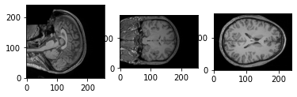
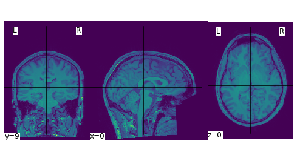

Notes on Learning about Neuroimaging Data Analysis
Resources
Tools
- Nilearn: A Python library for ML of brain volumns
- CONN Toolbox
Datasets
- 1000 Connectomes: public release of 1200+ ‘resting state’ functional MRI (R-fMRI) datasets independently collected at 33 sites
- Cognitive Communication Science Lab fMRI data
- Emotion Recognition fMRI data
Tutorials
- Analyzing MRI data in Python
- Andy’s Brain Book
- Andrew Jahn’s youtube channel: author of Andy’s Brain Book
- Functional Neuroimaging Analysis in Python: web tutorial
Related Papers
In zotero
MRI Analysis in Python (Notes)
Notes for materials from the pybrain workshop and this youtube video.
Two main packages used for analyzing MRI data in Python are Nibabel and Nilearn.
- Nibabel: saving and loading MRI data
- Nilearn: statistical learning with MRI data
Using Nibabel to Inspect Images
The dataset used here is from the brain dynamics during flow experience data. Each subject has an anatomical MRI scan and functional MRI scans during 3 different tasks.
The package nibabel can be used for loading and viewing MRI data.
# packages |
Anatomical MRI
Loading data & data structure
- The command
nb.loadcan be used to input MRI image. The data file compatible with nibable usually ends with.niior.nii.gz. get_fdatagets the data array from an image file, the resulting data array’s shape correspondes to the scan’s dimension
In this case, because the scan is anatomical and not functional, the resulting data is 3-dimensional. The 3 dimensions correspond to the i, j, k axes in the voxel space. The voxel space refers to the coordinate space of a MRI image. This is different from a scanner-subject reference space which is relative to the scanner and uses the x, y, z as coordinates. In the reference space, the (0, 0, 0) coordinates of x, y, z is the magnet isocenter. Units for these are mms. Below, the data array shape is in voxel space.
# anatomical mri (3D because it is not functional) |
(176, 240, 256)
Plot the center slice on all axes. From these plot, we can see that the i dimension is from left to right, j is from front to back, and k is top to bottom of the brain.
|
position of voxel at center is i = 88, j = 120, k = 128; voxel at center value: 231.00

From the voxel space to the reference space
The Affine matrix can be used to transform between the voxel and reference spaces. Essentially, the affine matrix is the function $f$ in $(x, y, z) = f(i, j , k)$.
print(img_anat.affine) # the affine matrix |
[[ 9.97948170e-01 -6.33936822e-02 9.20792390e-03 -8.05883331e+01]
[ 6.38809726e-02 9.95547771e-01 -6.93098381e-02 -9.50348053e+01]
[-4.77313204e-03 6.97556883e-02 9.97552693e-01 -1.17536789e+02]
[ 0.00000000e+00 0.00000000e+00 0.00000000e+00 1.00000000e+00]]
(4, 4)
Usually, the affine can be break down into a matrix $M$ and three components $a, b, c$ such that
In the following, using the above transformation is the same as using the apply_affine function in nibabel
M = img_anat .affine[:3, :3] |
[ 0.80247819 21.18079358 18.10060273]
[ 0.80247819 21.18079358 18.10060273]
import nilearn.plotting |
/opt/anaconda3/lib/python3.9/site-packages/pandas/core/computation/expressions.py:21: UserWarning: Pandas requires version '2.8.4' or newer of 'numexpr' (version '2.7.3' currently installed).
from pandas.core.computation.check import NUMEXPR_INSTALLED
/opt/anaconda3/lib/python3.9/site-packages/pandas/core/arrays/masked.py:60: UserWarning: Pandas requires version '1.3.6' or newer of 'bottleneck' (version '1.3.2' currently installed).
from pandas.core import (
<nilearn.plotting.displays._slicers.OrthoSlicer at 0x7ff678d41bb0>

Functional MRI in three tasks
img = nb.load('data/sub-005/func/sub-005_task-game_run-01_bold_defaced.nii') |
(120, 120, 72, 185)